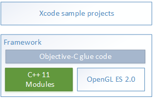
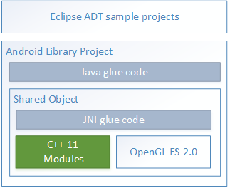
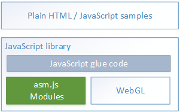

You can find more information on WILL in the following topics:
WILL (Wacom Ink Layer Language) is a cross-platform universal ink solution. WILL SDK is a Software Development Kit (SDK) that allows you to include premium digital inking features in your applications. Its modularized architecture allows each module to be configured, replaced, or omitted as required by the specific application, providing you with superior flexibility. You can also use the WILL open file format (.will) to exchange ink content between applications.
WILL SDK includes:
Digital ink (referred to in this documentation as ink) content comprises of strokes. These are usually, but not necessarily, created with a pointing device. Strokes have certain graphical characteristics and can be optionally associated with other data or metadata. You can digitally store and share ink content using various models – vector-based, pixel-based, or hybrid.
The WILL file format is similar to SVG, but is specifically designed to accommodate digital ink content. It is used for exchanging ink content between devices and applications, and is implemented as an open and extensible binary format.
Note that the main modules of the WILL software library do not rely on a specific file format. You can use alternatives to the WILL file format (for example, InkML, SVG, or PNG) to exchange handwritten content, according to a specific application requirements.
WILL supports a variety of input technologies and generates the best possible ink through the use of two dedicated modules, Path and Smoothing, that take into account the specific characteristics of each input type. The Rasterizer module then provides advanced real-time stroke rendering. The Manipulation module supports editing functions that leverage the WILL stroke mathematical model (referred to as the stroke model in this documentation). The Serialization module encodes and decodes stroke data.
In more detail:
The WILL software library also provides a range of utility algorithms, including:
WILL SDK provides platform-specific packages for iOS, Android, Windows Store, and Web. These packages provide a deep integration with the hosting platform by using native packaging and programming techniques, and by providing platform-specific language bindings for all modules in the software library.
Software applications often combine ink with other content, such as typed text and images. The platform-specific packages provide the flexibility and extensibility required to tightly integrate WILL with any application.
Platform-specific tutorials illustrate the use of the software library modules. Source code is provided in each case, and files use a naming convention that reflects the numerical ordering of topics in the Tutorials section of the documentation for each platform.

The iOS software library is packaged as a framework, and Objective-C language binding allows iOS developers to use the preferred language of the platform.

The Android software library is packaged as a native library (shared object) wrapped in an Android library (JAR). Java language binding allows Android developers to use the preferred language of the platform and easily integrate ink content inside the View hierarchy.
The Windows Store software library is packaged as an unmanaged Windows Runtime Component. It can be used from any language supported by Windows Runtime (WinRT), whether inside a managed or an unmanaged environment.

The Web software library is packaged as a JavaScript module with an asm.js program. It can be used by any standard HTML 5 application as a regular JavaScript library.
Additional integration can be supported on request under a high-profile partnership contract. For example: